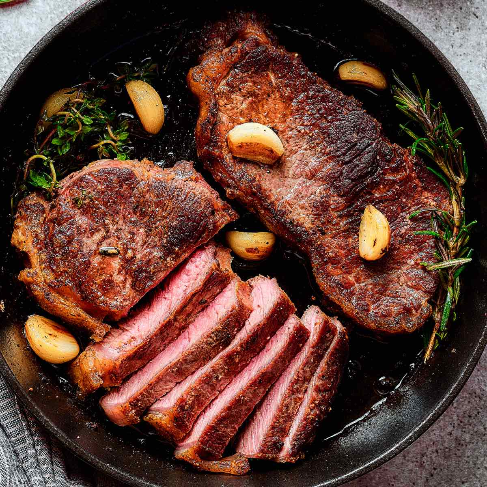

Home
New York Strip Steak

Description
The New York Strip Steak is one of my favorite
high-protein classics. It can be practically
served with any side. Known for its bold, beefy flavor and firm,
satisfying texture, the meat is tender while still offering a
"steak-lover's" chew. This recipe will make your mouth juicy.
Ingredients
- 2 New York steaks
- 3 tbsp butter
- 1 tbsp olive oil
- 4 cloves garlic
- 2 sprigs rosemary
- Salt
- Pepper
Steps
-
Lay out the two New york steaks onto a cutting board and season all
sides with salt and pepper.
-
Heat a cast iron skillet or stainless steel pan to high heat. Once
hot/smoking, add olive oil and spread evenly across the pan.
-
Place both steaks into the pan with the fat side down, rendering down
the fat for about 2 minutes until a crust forms.
-
Flip the steaks and cook each side for 3-4 minutes, with thicker cuts
taking longer.
-
Once the sides are cooked and have formed a crust, put the heat on low.
Wait 2 minutes for the pan to cool. Once cooled, add butter, rosemary,
and garlic to the pan.
-
Butter base the steaks with all that butter and herbs with a spoon for a
minute.
-
Very important! Rest the steaks for 7 minutes so they
absorb the juices.
Cut into slices and enjoy!